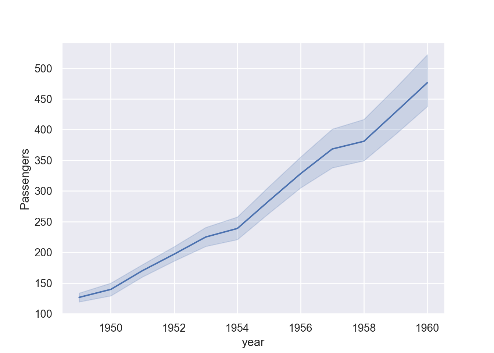
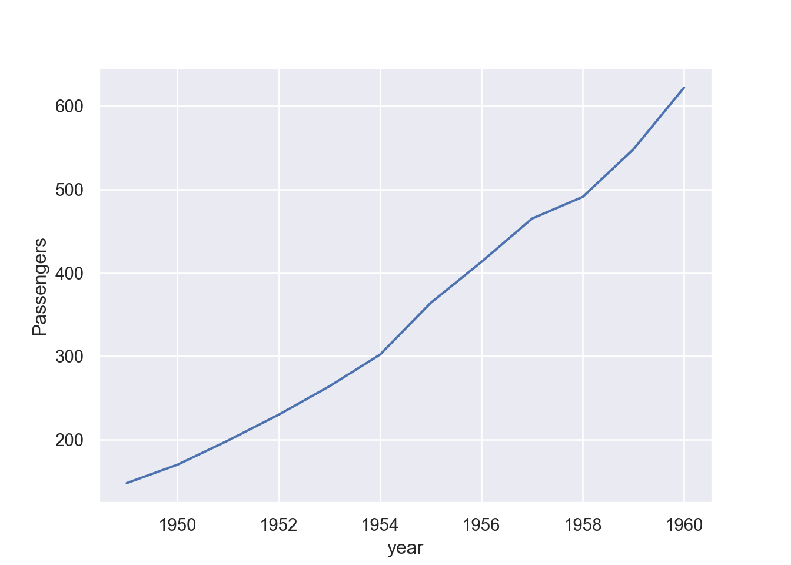
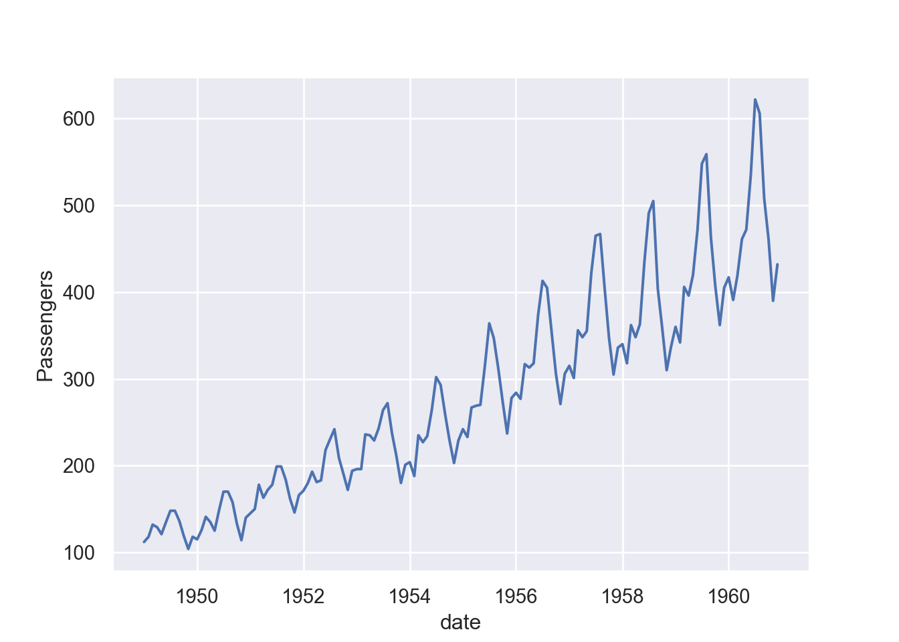
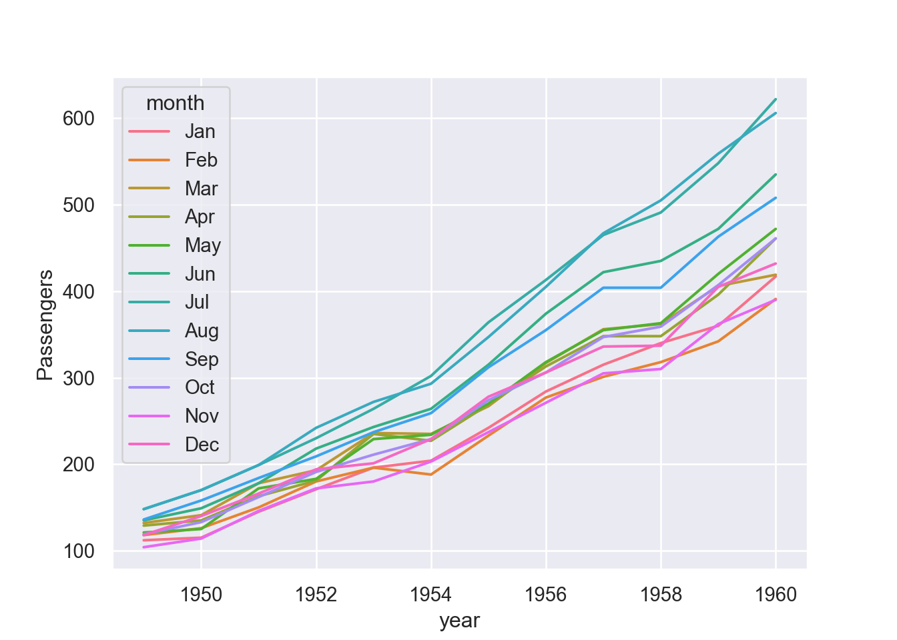

plotting in Python with Seaborn: Line plot
![]()
Introduction
In visualization with Seaborn of this series, we were introduced on the power visualization and dove into distributions plot. In this post we are going focus on jointplot. jointplot is used to plot the histogram distribution of two columns, one on the x-axis and the other on the y-axis. A scatter plot is by default drawn for the points in the two columns. Seaborn has nifty function called jointplot(), which is dedicated for this type of plot.
Loading libraries
Though most people are familiar with plotting using matplot, as it inherited most of the functions from MatLab. Python has an extremely nady library for data visualiztion called seaborn. The Seaborn library is based on the Matplotlib library. Therefore, you will also need to import the Matplotlib library.
Dataset
We are going to use a flights dataset, which has 10 years of monthly airline passenger data. We do not need to download this dataset as it comes with the seaborn package. We only need to load it from the package into our session using sns.load_dataset function and specify the penguins as the name of the dataset and assign it as df;
year month passengers
0 1949 Jan 112
1 1949 Feb 118
2 1949 Mar 132
3 1949 Apr 129
4 1949 May 121
.. ... ... ...
139 1960 Aug 606
140 1960 Sep 508
141 1960 Oct 461
142 1960 Nov 390
143 1960 Dec 432
[144 rows x 3 columns]A printed df dataset shows that a flight dataset is made up of three variables — year, month, and number of passenger between January 1949 and December 1960, which are arranged in long format. To draw a line plot using long-form data, we simply assign the x and y variables
fig = plt.figure()
sns.lineplot(data=df, x="year", y="passengers")
plt.ylabel('Passengers')
plt.show()
However, looking at Figure 2, we notice that the confidence level is aslo plotted thought we did not specify them. The reason is that each year has twelve records of monthly number of passengers, which when plotted are also estimated to show the variability of passenger on that year. So if we want to draw only the line, we may filter a specific year, for this case I only want to plot passengers for July during the same period.
First, we need to filter the dataset to July and assign a new dataset as df_july. The chunk below shows a line of code that filter passenger between 1949 to 1960 for July only.
Then plot.
fig = plt.figure()
sns.lineplot(data=df_july, x="year", y="passengers")
plt.ylabel('Passengers')
plt.show()
Because I still learning how to deal with time in python, I simply switch to R as quarto allows me to swap code for the two languages within the same environment. I switch to R code and then convert the panda data frame to tibble using the reticulate package (Ushey, Allaire, and Tang 2020). The package allows us to convert pandas dataframe to tibble using a py function within R chunk;
Then within R chunk, we can add a new column date contain date for each month
tb = tb |>
dplyr::mutate(date =
seq(lubridate::my(011949), lubridate::my(121960), by = "month"))
tb |> head() year month passengers date
1 1949 Jan 112 1949-01-01
2 1949 Feb 118 1949-02-01
3 1949 Mar 132 1949-03-01
4 1949 Apr 129 1949-04-01
5 1949 May 121 1949-05-01
6 1949 Jun 135 1949-06-01The printed tibble has one added variable date. Since we have created this dataset, we can convert it back to python pandas dataframe by simply using r. funtion within the python chunk;
year month passengers date
0 1949.0 Jan 112.0 1949-01-01
1 1949.0 Feb 118.0 1949-02-01
2 1949.0 Mar 132.0 1949-03-01
3 1949.0 Apr 129.0 1949-04-01
4 1949.0 May 121.0 1949-05-01
.. ... ... ... ...
139 1960.0 Aug 606.0 1960-08-01
140 1960.0 Sep 508.0 1960-09-01
141 1960.0 Oct 461.0 1960-10-01
142 1960.0 Nov 390.0 1960-11-01
143 1960.0 Dec 432.0 1960-12-01
[144 rows x 4 columns]Then we can now plot a line and use the new column date we just created instead of year.
fig = plt.figure()
sns.lineplot(data=pdf, x="date", y="passengers")
plt.ylabel('Passengers')
plt.show()
Figure 3 and Figure 2 are almost similar but while Figure 3 used year as x-axis, Figure 3 used date in the x-axis. You can see that Figure 3 clearly shows the variability of passenger within the year, which was not possible with Figure 2.
We can assign a grouping semantic (hue, size, or style) to plot separate lines
fig = plt.figure()
sns.lineplot(data=df, x="year", y="passengers", hue = "month")
plt.ylabel("Passengers")
plt.show()
Similarly, we can assign multiple semanti variables of the same variable that makes the plot more appealing ore easily to distinguish between the assigned parameters.